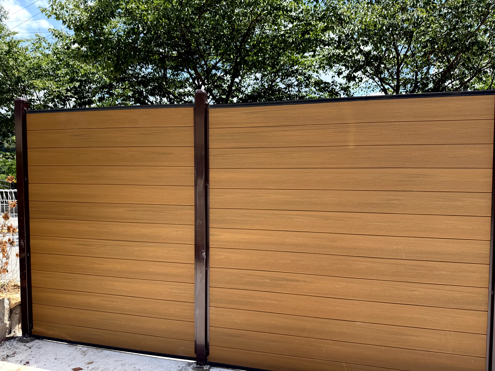
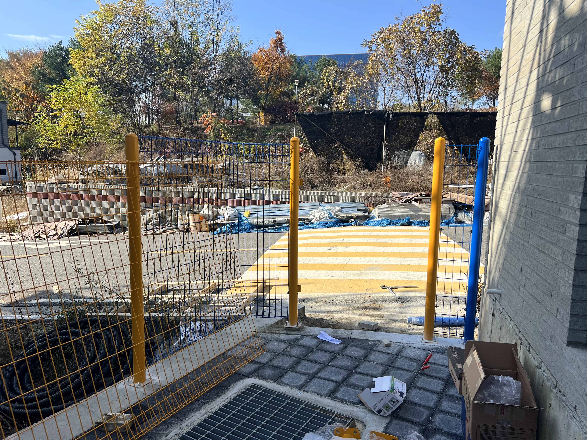
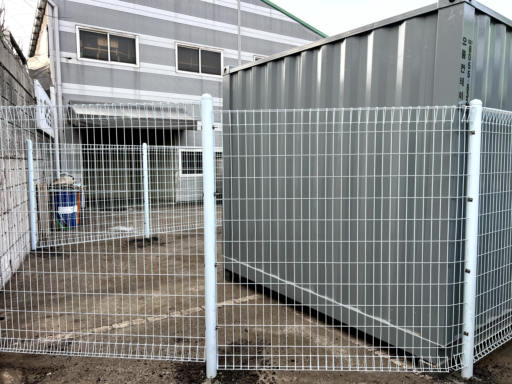
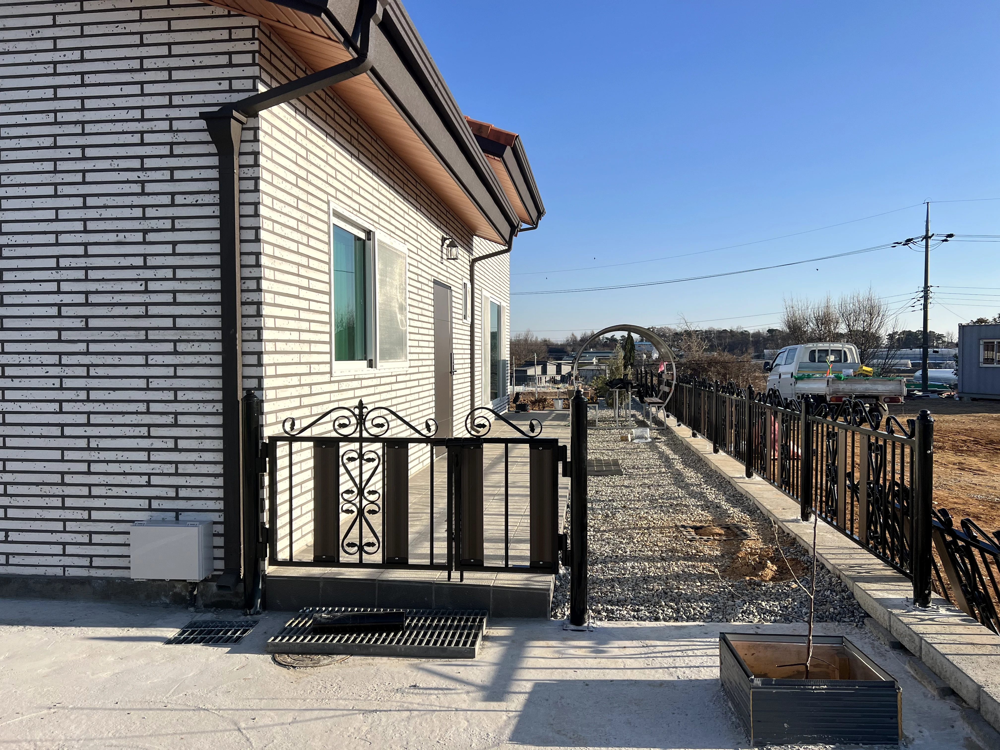
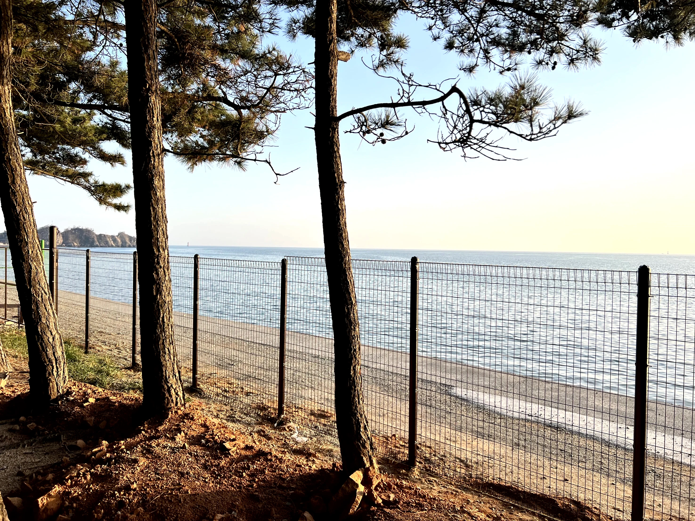
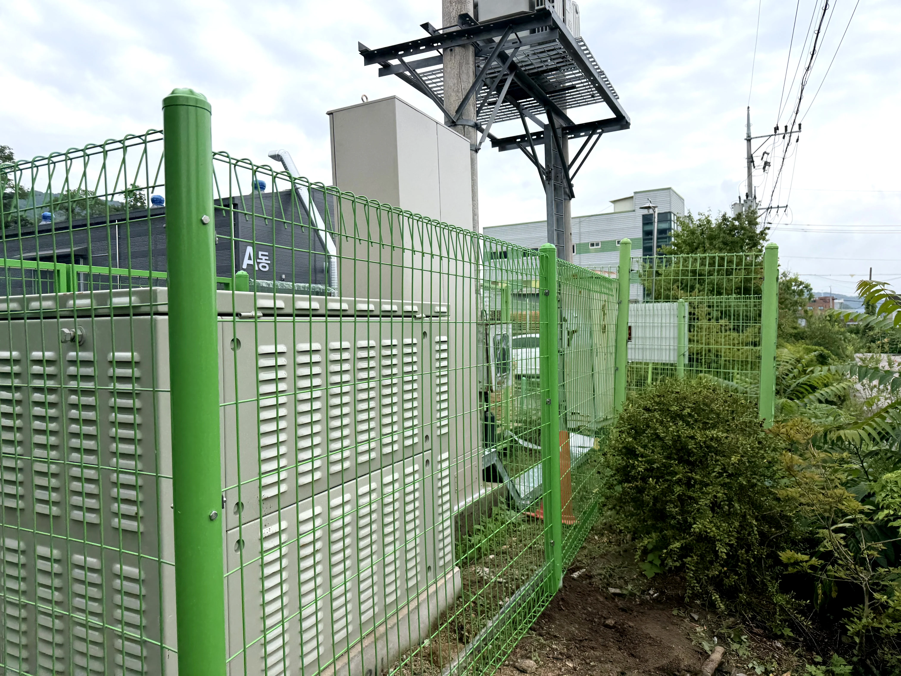
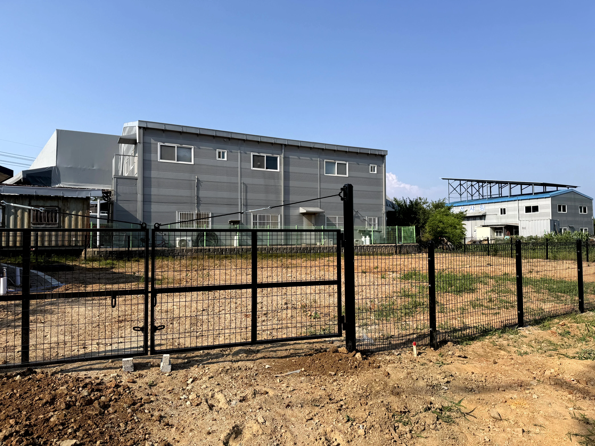
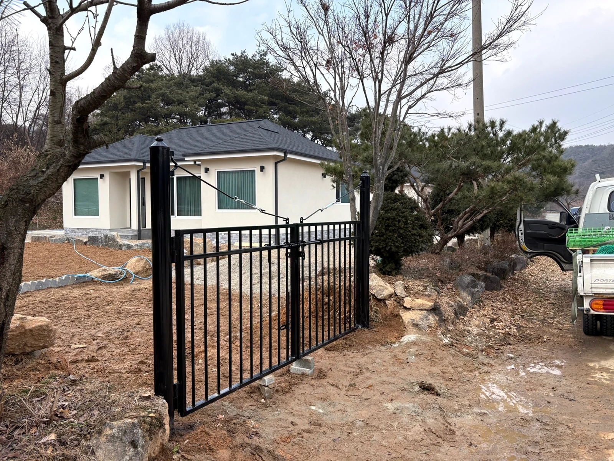
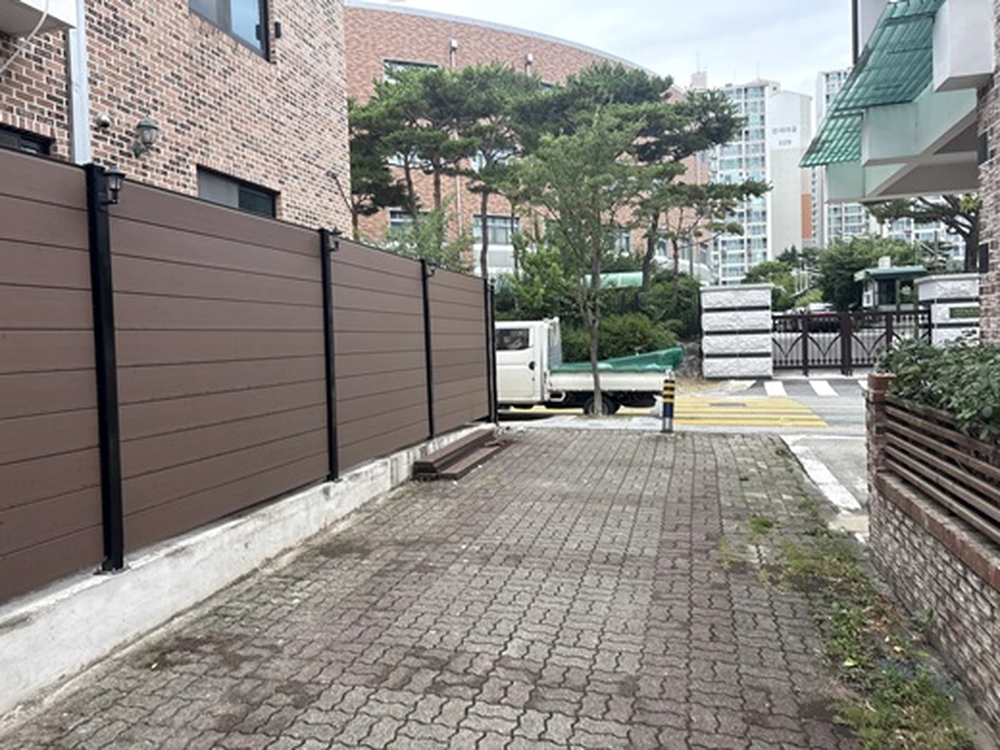

합성목 휀스
차폐와 디자인을 함께 고려하는 주택·상가 공간에 적합합니다.
청주휀스와 증평휀스 현장의 지반, 높이, 개방감, 차폐 목적을 살펴 필요한 자재와 구조를 제안합니다. 주택부터 공장·농지·상가까지 현장에 맞춰 상담합니다.
울타리는 단순히 선을 긋는 시설물이 아닙니다. 경사와 기초 상태, 출입 동선, 필요한 높이와 시야 차단 정도가 달라지면 적합한 방식도 달라집니다. 청주휀스 상담 시 사용 목적을 먼저 정리하고 공간과 조화를 이루는 방향을 살핍니다.

전원주택, 농지, 공장, 상업시설은 필요한 경계 방식이 서로 다릅니다. 증평휀스 시공은 유지관리와 개방감, 내구성, 출입구 위치를 함께 고려해 자재 조합을 정하는 것이 중요합니다.
합성목과 디자인형 제품으로 사생활 보호와 외관의 균형을 고려합니다.
메쉬형과 철제형을 활용해 경계가 분명하고 관리하기 편한 구성을 검토합니다.
설치 거리와 지형 변화를 확인해 경제성과 실용성을 함께 살핍니다.

차폐와 디자인을 함께 고려하는 주택·상가 공간에 적합합니다.

개방감과 경계 기능이 필요한 공장·농지·시설 부지에 활용됩니다.

건물 외관과 출입 동선을 고려한 난간·울타리·대문 구성이 가능합니다.
설치 위치와 길이, 원하는 형태를 확인합니다.
지반·경사·간섭 요소와 출입 동선을 살핍니다.
용도와 예산을 고려해 규격과 마감 방향을 정합니다.
기둥 간격과 수평, 연결부를 확인하며 마무리합니다.
사진은 현장 여건에 따라 서로 다른 형태와 자재가 적용된 사례입니다.





청주휀스 및 증평휀스 설치를 알아볼 때는 이동 거리보다 현장 조건을 정확히 파악하는 것이 먼저입니다. 설치 목적과 구간을 알려주시면 상담에 필요한 내용을 빠르게 정리할 수 있습니다.
설치 길이와 높이, 자재 종류, 기초 상태, 경사, 대문 포함 여부 등에 따라 달라질 수 있어 현장 조건 확인이 중요합니다.
현장 목적과 구조에 따라 합성목, 메쉬, 철제형 등 다양한 방식을 검토할 수 있습니다.
기존 구조물과 기초 상태를 확인한 뒤 철거 범위와 새 설치 방식을 함께 검토하는 것이 좋습니다.
출입 폭과 차량 동선, 사용 빈도에 맞춰 울타리와 어울리는 대문 구성을 상담할 수 있습니다.
청주·증평 휀스 시공 상담 · 현장 견적 문의